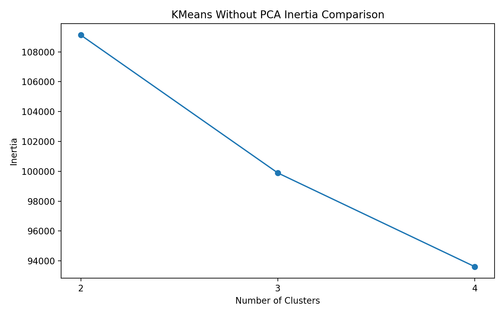
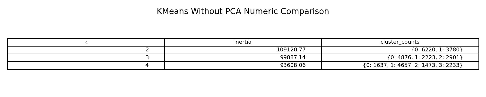
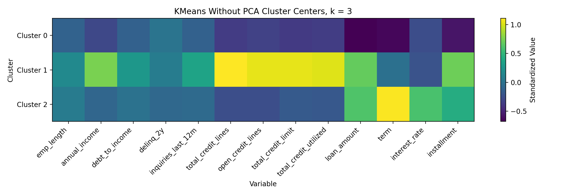
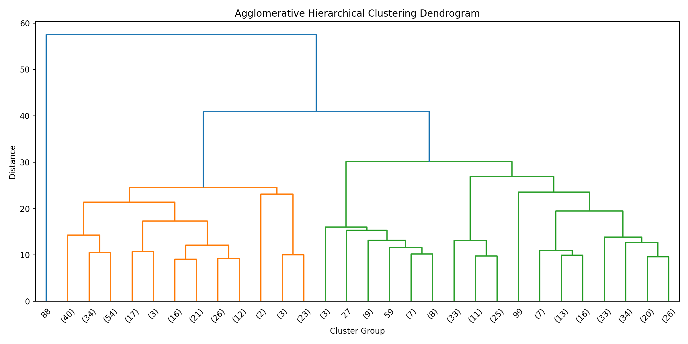

CS 432 Project Journal
Module 2 - Unsupervised Learning, Clustering
Letting the data sort borrowers into groups on its own, first with KMeans and then with hierarchical clustering.
Starting without the answer key
This was my first real modeling step, and I wanted to begin without the label so the data could speak for itself. The idea behind clustering is simple enough. Hand the model a pile of borrowers described only by numbers and ask whether they fall into natural groups, then go back afterward and see whether those groups mean anything. I leaned on the Lending Club data here because it carries the larger and richer set of borrower and loan variables, which gives clustering more to work with than the compact German Credit file would.
Because KMeans never sees the outcome, I held loan_status out entirely and kept it only as something to check the clusters against later. The thirteen variables I fed in covered the spread of a borrower's financial life, employment length, annual income, debt to income, recent delinquencies and credit inquiries, several counts of credit lines and limits, how much credit was already in use, and the loan itself in terms of amount, term, interest rate, and installment.
One bit of prep mattered more than the rest. KMeans measures distance between records, and my variables live on wildly different scales, with annual income and total credit limit running into the thousands while delinquency and inquiry counts sit in the single digits. If I left that alone, the big dollar fields would quietly dominate every distance calculation and drown out everything else. Standardizing all thirteen with StandardScaler put them on equal footing first, which is the only reason the groupings that came out are about borrowers rather than about which columns happen to use the largest numbers.
Choosing how many groups
I ran KMeans at two, three, and four clusters so I could compare a coarse split against finer ones. Inertia, which measures how tightly records sit around their cluster centers, fell from 109,120.70 at two clusters to 99,887.14 at three and then 93,608.06 at four. Lower inertia always looks better at a glance, but it is a bit of a trap, since adding clusters mechanically tightens the fit whether or not the extra groups mean anything. The honest signal is where the improvement starts to taper, and here the biggest single drop comes from two clusters to three, with the step to four smaller and harder to justify.
The record counts told the same story. Two clusters split the ten thousand borrowers into one large group of about six thousand and a smaller one of roughly four thousand, which is tidy but too blunt to say much. Four clusters carved the data into smaller, more specific pockets that were tougher to describe in plain terms. Three clusters landed in the middle, dividing the borrowers into groups of 4,876, 2,223, and 2,901, all big enough to actually interpret. That is the model I carried forward.


What the three groups turned out to be
The three way split lined up with how I actually think about lending, which was reassuring. Reading the heatmap of cluster centers, the first group sits below average across loan amount, term, interest rate, installment, and most of the credit capacity measures, so it reads as a lower loan, lower burden group of borrowers who are simply not carrying much. The second group is the opposite on the capacity side, running well above average on annual income, total and open credit lines, total credit limit, and credit already in use. These are borrowers with deep, active credit histories and plenty of room.
The third group is the one I find most interesting for a risk project. It runs high on loan amount, term, interest rate, and installment, yet it does not show the same strength on income and credit capacity that the second group does. In other words it looks like a heavier loan burden group, borrowers shouldering large or long obligations without the deep financial cushion to match. That gap between what someone owes and what they have behind them is precisely the kind of thing a lender would want to notice, and the model surfaced it without ever being told what a risky borrower looks like.

A second opinion from hierarchical clustering
KMeans hands you a flat set of groups in one shot, so I wanted a method that works differently as a cross check. Agglomerative hierarchical clustering builds groups from the bottom up, starting with individual records and merging the closest ones step by step, which exposes structure that a flat partition hides. Ten thousand records would make an unreadable diagram, so I drew a random sample of 500 from the same standardized data and used Ward linkage, which merges in the way that keeps each group's internal variation as small as possible.
The dendrogram reads from the bottom, where many small groups of similar borrowers merge at low distances around thirty, up to a couple of larger merges near forty and fifty eight where genuinely different groups finally join. The detail that jumped out was a single branch sitting far off on the left, refusing to join anything until a very high distance. That branch turned out to be one borrower with an income above two million and a credit limit to match, a record so unlike everyone else that the method gave it a cluster of its own. The three clusters came out at 248 records, that lone outlier, and 251 records.
Setting the outlier aside, the two real groups echoed the KMeans story almost exactly. One held heavier loans, with an average loan amount above twenty three thousand, a term over fifty months, an interest rate near fourteen percent, and an installment over six hundred dollars. The other held lighter loans, with a lower average income, a loan amount around eight thousand five hundred, a shorter term, a gentler rate, and an installment under three hundred. When I checked the clusters against loan_status afterward, both large groups were more than ninety percent Current, which tells me the clusters were organizing borrowers by financial structure rather than by outcome. That is not a failure. The outcome label is a final result, while clustering grouped people by how their finances look, and those are different questions.

What clustering added
The thing I took from this module is that two very different unsupervised methods pointed at the same borrower profiles, a lighter burden group, a stronger capacity group, and a heavier obligation group. That agreement made the segmentation feel real rather than an artifact of one algorithm's quirks. The methods also revealed their own personalities along the way. KMeans tends to absorb an oddball borrower into whatever group is nearest, while hierarchical clustering puts that same borrower under a spotlight, and in risk work the ability to notice the record that does not fit is worth having.